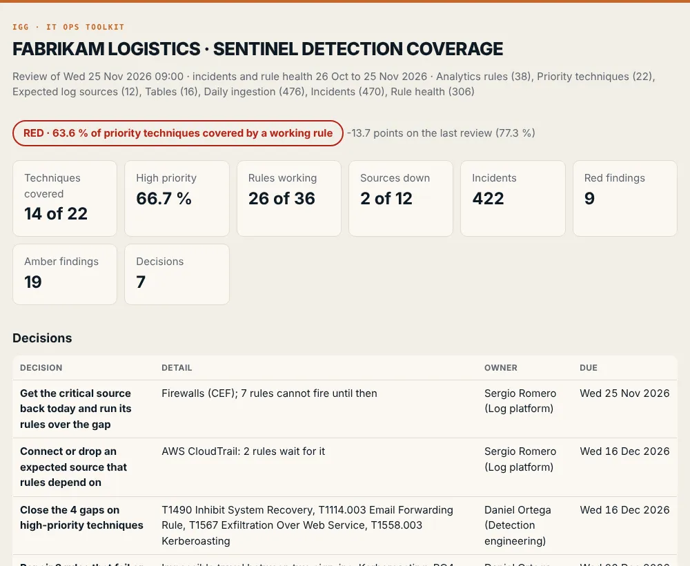

A firmware upgrade on the firewalls on a Friday afternoon, and the log forwarder stops sending. Nothing breaks that anyone can see. In Microsoft Sentinel, the seven analytics rules that read the firewall table are still enabled and still run on time; they just have nothing left to find. Five days later, that is the first thing the detection coverage review published with this post points at. It is an open-source project that runs on sample data from a fictional logistics company.
A rule can look fine in the list of analytics rules while it cannot fire. The review reads four things together: the rules with their MITRE ATT&CK mapping and the tables they read, the log sources the organisation expects, the rule health log and a month of incidents. It measures them against the organisation's own list of priority techniques.
Log sources
The firewall table has been silent since Friday at 14:12, against a limit of six hours for a critical source. Linux syslog is still arriving, but at 61% less than the weeks before, after a configuration change on half of the servers. AWS CloudTrail is on the list of expected sources and has never arrived, so the two rules written for it have never had anything to read. On the other side, two tables send 14 GB a day that no rule reads: a question for the platform team, not for the SOC.
Rules and techniques
Five rules read only the firewall table and cannot fire; two more read it next to another table and only see half of what they look for. The Kerberoasting rule has timed out every hour since 14 November. The rule for shadow copy deletion was switched off during a backup migration in September. Four rules have no ATT&CK technique, so they count for nothing in coverage, and three are on an old version of their template.
Of the 22 priority techniques, 14 have at least one rule that works today. Email forwarding rules, a classic start of invoice fraud, have no rule at all. Exfiltration to file-sharing sites had two rules, and both need the firewall table.
Incidents and noise
One rule, sign-ins from an unfamiliar country, raised 131 of the 422 incidents of the month, and 94% of the ones classified were benign or false. Most High incidents were picked up within the four-hour target, but 35 of 76 were not, and 30 of those arrived at night or at the weekend. Two High incidents have been open for more than a week, and 28% of closed incidents have no classification, so the noise of their rules cannot be measured.
The demo scores 63.6% of priority techniques covered by a working rule, 13.7 points down on the last review, with nine red and 19 amber findings and seven decisions: get the firewall logs back today and run their rules over the gap, connect or drop CloudTrail, close four gaps on high-priority techniques, repair three rules, tune the four noisiest, fix night and weekend triage, and decide on the two tables nobody reads.
How to use it with real data
A read-only PowerShell script exports the analytics rules and their template versions, finds the tables each rule reads, and queries the workspace for the last record of each table, daily ingestion, the incidents of the period and the rule health log. The expected sources, the priority techniques, the limits and the owners are the organisation's own lists and settings. It runs on Python with no external dependencies and produces a web report, a one-page pack for the security operations review and CSV files with every technique, source, rule, finding and action. The demo data is fictional: names, rules and figures.
Where it comes from
The tool comes from working with Microsoft Sentinel, Azure Monitor and Log Analytics, and with SIEMs such as Splunk and Google SecOps, alongside Microsoft Defender and Entra ID. It also draws on leading the technical response to major incidents and the post-mortems, and on defining security metrics and KPIs.
Want to bring it to your environment or adapt it to your case? Get in touch and we can look at it together.
Tech Career Lab · newsletter
Found this useful? Every two weeks I send one practical idea for IT professionals: LinkedIn, projects, networking and hiring processes.
Sign up and get the 33 ideas →